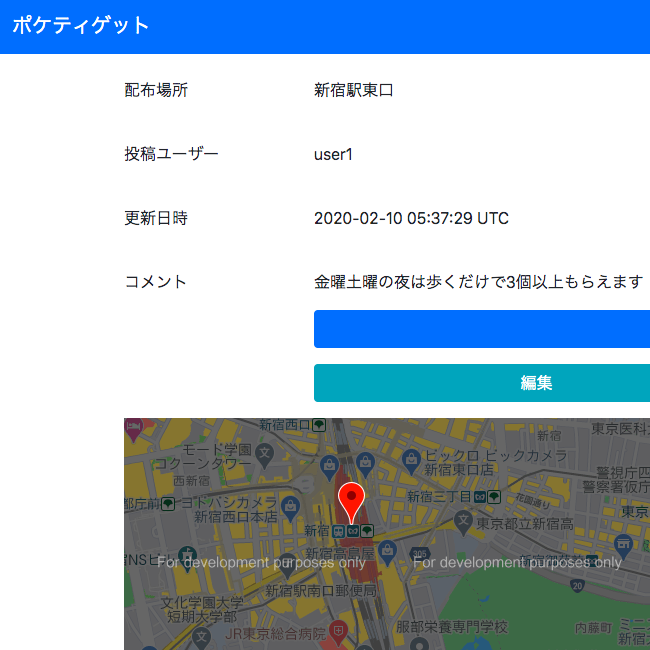

OBARA KEN
自己紹介サイトです。ご覧いただきありがとうございます。
簡単に経歴をご紹介します。2015年に東北大学理学部を卒業後、
大手セメント会社で鉱山の管理や地質調査の業務に従事しています。
その業務の中で、エクセルのシート転記作業があったのですが、
独学でエクセルVBAを学び、プログラムを組んだところ、
毎日30分かかっていた作業があっという間に終わるようになりました。
プログラミングの力に感心してITの勉強をはじめ、
基本情報処理技術者の資格にも挑戦しました。
それから数年後、転職活動をする中で、Webエンジニアという職種を知り、
こんなに魅力的な世界を今まで知らなかったことを後悔しております。
そして、昨年10月からRuby on Railsを中心にプログラミングを勉強し、
Webエンジニアへ転職を目指しています。
Work
②pocketiget
ポケットティッシュの配布場所共有アプリです
【使用】Ruby on Rails / Github / Bootstrap / jQuery / Mysql / GoogleMap API / コードはこちら（編集中）
Skill
Ruby on Rails / HTML / CSS / Bootstrap / jQuery /
Git / GitHub
/ MySQL / Web API / AWS / ExcelVBA
使用教材・受講講座
Qualification
- 基本情報技術者(2018 年 5 月)
- TOEIC725点(2019 年 3 月)
- ビジネス実務法務2級(2019 年 6 月)
- QC検定2級(2018 年 4 月)
- 測量士補(2019 年 7 月)